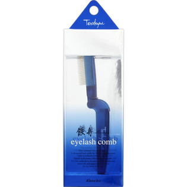
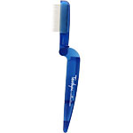

返回列表
产品名称：鉄舟コレクション アイラッシュコーム

カネボウ化粧品 鉄舟コレクション アイラッシュコーム －
メーカー カネボウ化粧品
JANコード 4973167897416
商品の特徴
まつ毛を1本1本自然に整えるまつ毛用コームです。目の細かい金属製コームなので、マスカラの重ね塗りも簡単。まつ毛にすっと通り、きれいに仕上がります。
成分・分量
＜材質＞
柄：ABS
歯：鉄
用法及び用量
＜使用方法＞
1．アイラッシュカーラーでまつ毛をカールし、マスカラをつけます。
2．マスカラが乾かないうちにアイラッシュコームでまつ毛の根元から毛先に向かってとかします。
※マスカラを重ねてつける場合は2を繰り返します。